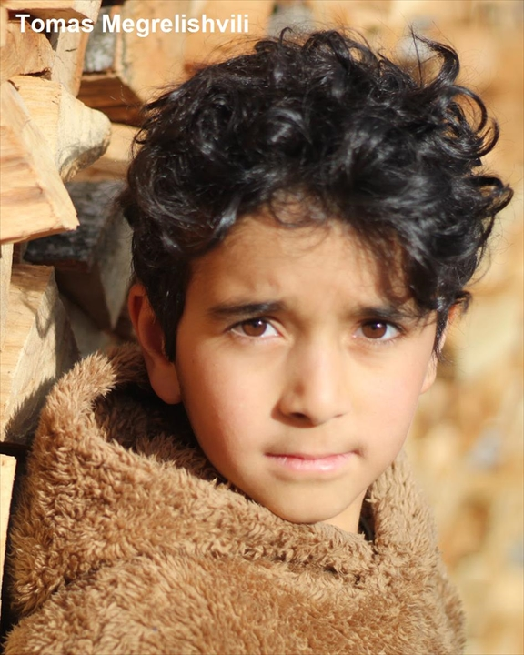
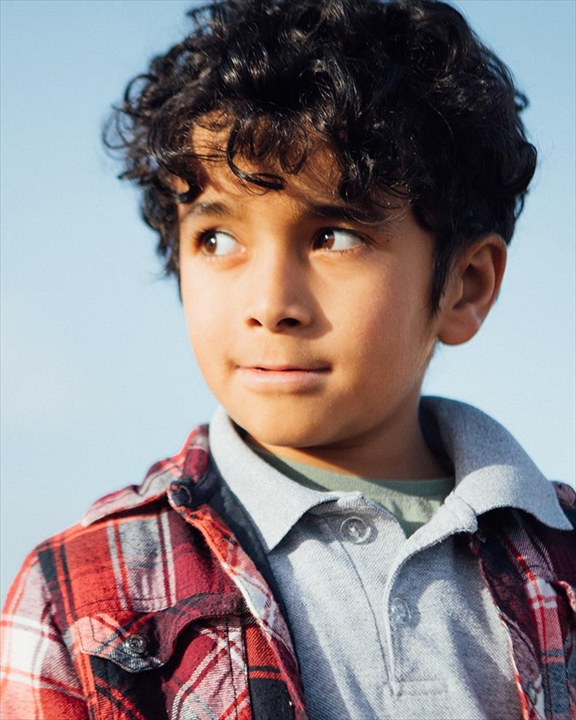
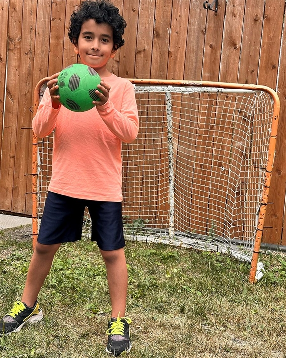
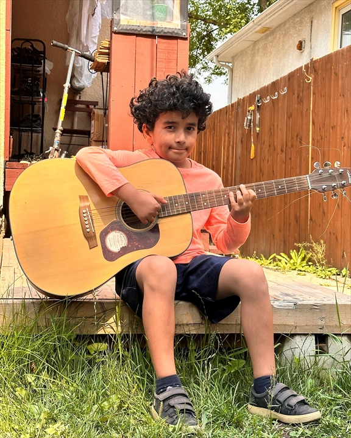

About
Tomas Megrelishvili is an 11-year-old screen actor based in Winnipeg, Manitoba, bringing natural emotional depth and sharp focus to every set.
He holds lead and principal credits across short films, television, commercial campaigns, and music videos — including a principal role as the Kid in Gur Sidhu's music video "Afterimage" (2026).
He trains at the Onalee Ames Film Studio Youth Screen Academy and speaks English, Ukrainian, Georgian, and Russian.
Selected Credits
- Afterimage — Music Video (Gur Sidhu)Principal (Kid) — 2026
- Dufresne — CommercialLead
- Serious Business — Short FilmPrincipal
- The Path is Within You — Short FilmLead
- Ancient Bodies — TelevisionPrincipal
Photos



Demo Reel
Contact
For bookings and inquiries, please visit his Casting Workbook profile: